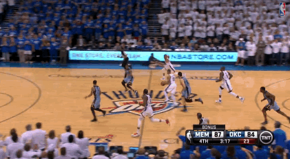
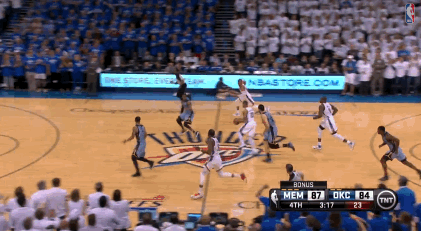

Russell Westbrook is an professional basketball player for the Oklahoma City Thunder. He is a five-time NBA All-Star and a two-time NBA All-Star Game Most Valuable Player, winning consecutive awards in 2015 and 2016. He is also a four-time All-NBA Second Team member.Westbrook played college basketball for the UCLA Bruins and earned third-team all-conference honors in the Pac-10. He was selected with the fourth overall pick in the 2008 NBA draft by the Seattle SuperSonics, which then relocated to Oklahoma City. Westbrook has represented the United States national team twice in the FIBA tournament, winning gold medals in the 2010 FIBA World Championship and the 2012 Olympics..
 


http://www.nba.com/playerfile/russell_westbrook/
http://espn.go.com/nba/player/_/id/3468/russell-westbrook